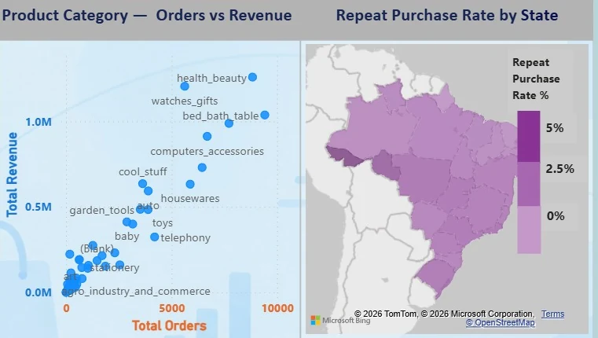

Olist customer retention and repeat purchase analysis
Who comes back after a first order? This report follows revenue, orders, customers and repeat purchase rate quarter by quarter from Q1 2017 to Q3 2018, and slices them by payment type, review score, product category and Brazilian state.
- Customers
- 96K
- Orders
- 99K
- Revenue
- 16M
- Repeat purchase rate
- 3%
Full period shown in the report, Q1 2017 to Q3 2018.
Challenge
Turning a complex e-commerce dataset into reliable historical customer-retention insights while avoiding the use of predicted values as actual results.
Solution
Built a connected data model and DAX measures for repeat purchases, retention, revenue, and QoQ trends, then validated the results through a dedicated validation page.